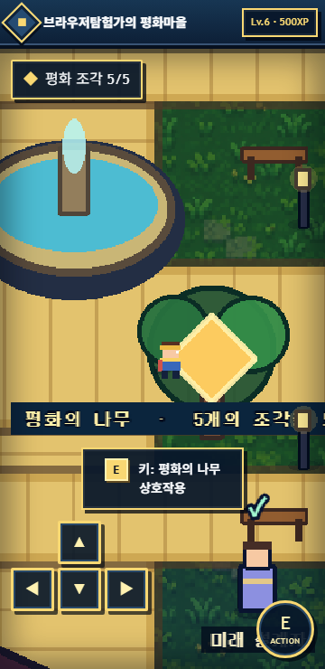
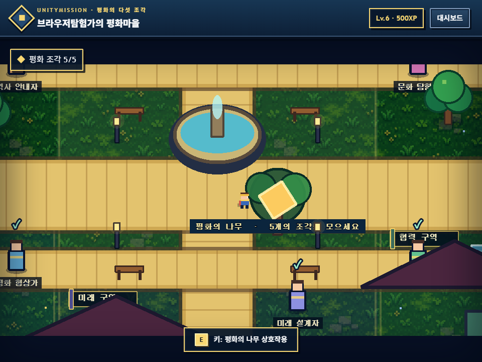
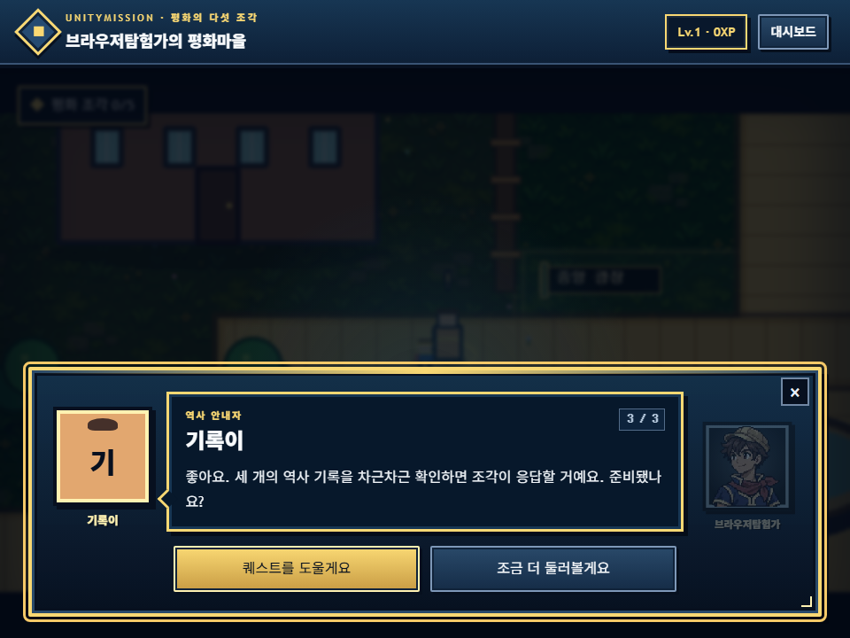

UNITYMISSION · 평화의 다섯 조각
처음 사용하는 사람과 처음 코드를 보는 사람을 위한
사용자 매뉴얼
및 구현 설명서
2D 픽셀 RPG로 배우는 통일·평화교육
문서 안내
이 문서를 이렇게 사용하세요
이 PDF는 게임을 플레이하는 방법과, 게임이 어떻게 만들어졌는지를 한 번에 설명합니다. 코딩 경험이 없어도 읽을 수 있도록 전문 용어 뒤에 쉬운 뜻을 함께 적었습니다.
1
게임을 하려는 분
1부 사용자 매뉴얼만 읽으면 됩니다. 시작, 조작, NPC 대화, 퀘스트, 저장, 엔딩 순서로 설명합니다.
2
수업에 활용하려는 분
1부의 학습 흐름과 개인정보·수료증 안내를 확인하고, 마지막 체크리스트를 활용하세요.
3
코드를 수정하려는 분
2부 구현 설명서에서 폴더 구조, 저장 방식, React와 Phaser의 역할, 테스트와 배포 절차를 확인하세요.
!
꼭 알아둘 점
학습 기록은 계정이 아니라 현재 브라우저에 저장됩니다. 다른 기기나 다른 브라우저로 자동 이동하지 않습니다.
교육 안내
UnityMission의 수료증은 비공식 학습 참여 확인용입니다. 학교·기관의 공식 이수증이나 공인 평가 결과가 아닙니다. 문항 정답은 공개되어 있으므로 공인 시험 용도로 사용하지 않습니다.
빠른 용어 풀이
| 용어 | 쉬운 뜻 |
|---|
| RPG | 캐릭터를 움직이며 이야기와 임무를 진행하는 게임 |
| NPC | 플레이어가 조작하지 않는 마을 주민 캐릭터 |
| 퀘스트 | NPC에게 받아 해결하는 학습 임무 |
| XP | 미션을 완료하면 얻는 경험치 |
| localStorage | 웹사이트가 현재 브라우저 안에 기록을 보관하는 공간 |
UnityMission 통합 안내서2
목차
찾아보기
1부 · 사용자 매뉴얼
- 게임 목표와 학습 흐름4
- 처음 시작하기5
- 캐릭터 조작6
- 마을과 NPC7
- 대화와 퀘스트8
- 문제 풀이와 보상9
- 퍼즐·엔딩·수료증10
- 모바일·저장·문제 해결11
2부 · 구현 설명서
- 개발 환경과 실행12
- 전체 구조 이해하기13
- 라우트와 핵심 파일14
- 상태와 저장 구조15
- React와 Phaser 연결16
- 대화·퀘스트 구현17
- 테스트와 품질 게이트18
- GitHub·Vercel 배포19
- 안전하게 수정하는 법20
한눈에 보는 핵심
닉네임
입력
마을
탐험
NPC
대화
3문항
퀘스트
조각·XP
획득
추천 읽기 순서 처음 플레이한다면 4~11쪽을 차례로 읽으세요. 코드를 처음 맡았다면 12쪽의 실행부터 따라 한 뒤 13~17쪽 구조를 읽고, 18쪽 명령을 모두 통과한 다음 수정하세요.
UnityMission 통합 안내서3
1부 · 사용자 매뉴얼
1. 게임 목표와 학습 흐름
평화마을을 탐험하고 다섯 NPC의 교육 퀘스트를 완료해 평화 조각 5개를 모으는 것이 목표입니다.
게임에서 배우는 다섯 주제
| 순서 | 미션 | NPC | 배우는 내용 |
|---|
| 1 | 역사 | 역사 안내자 | 분단과 한반도 현대사의 기초 사실 |
| 2 | 문화 | 문화 탐험가 | 남북의 일상과 언어, 서로 다른 표현 |
| 3 | 평화 | 평화 협상가 | 갈등을 대화와 경청으로 해결하는 방법 |
| 4 | 협력 | 협력 연구자 | 공동 문제를 함께 해결하는 원리 |
| 5 | 미래 | 미래 설계자 | 평화로운 미래를 위한 참여와 선택 |
순서가 중요한 이유 미션은 1번부터 차례로 열립니다. 잠긴 NPC를 먼저 만나면 앞선 평화 조각을 찾아오라는 안내가 표시됩니다.
1부 · 사용자 매뉴얼4
1부 · 사용자 매뉴얼
2. 처음 시작하기
웹사이트 열기
Chrome, Edge, Safari 같은 최신 브라우저에서 https://unity-mission.vercel.app/을 엽니다.
닉네임 입력
2~12자의 닉네임을 입력합니다. 실명 대신 수업용 별명을 사용해도 됩니다.
게임 시작
모험 시작하기 버튼을 누르면 평화마을 중앙 광장으로 이동합니다.
이어하기
같은 브라우저에 기록이 있으면 이전 닉네임과 진행 상태가 자동으로 나타납니다.
시작 전에 확인할 것
- 인터넷 연결이 되어 있습니다.
- 브라우저 창을 너무 작게 줄이지 않았습니다.
- 키보드 사용자는 게임 화면을 한 번 클릭했습니다.
- 공용 컴퓨터라면 사용 후 기록 초기화를 할 예정입니다.
설치가 필요한가요? 아니요. 별도 프로그램이나 회원가입 없이 웹사이트에서 바로 실행됩니다.
다른 기기에서 이어하기 기록은 계정에 저장되지 않습니다. 학교 컴퓨터에서 한 기록은 집 컴퓨터에 자동으로 나타나지 않습니다.
게임 화면의 기본 정보
| 표시 | 뜻 |
|---|
| 닉네임의 평화마을 | 현재 사용자의 게임 공간 |
| Lv. · XP | 완료한 미션에서 계산한 레벨과 경험치 |
| 평화 조각 0/5 | 완료한 미션 수와 같은 조각 개수 |
| 대시보드 | 미션 진행률·배지·수료증으로 이동하는 메뉴 |
1부 · 사용자 매뉴얼5
1부 · 사용자 매뉴얼
3. 캐릭터 조작
컴퓨터에서
| 기능 | 키 | 설명 |
|---|
| 이동 | W A S D 또는 방향키 | 위·왼쪽·아래·오른쪽으로 이동합니다. |
| 대화·조사 | E | 가까운 NPC와 평화의 나무와 상호작용합니다. |
| 대화 닫기 | Esc | 열린 대화창을 닫습니다. |
| 소리 | 🔊·볼륨 | 상단 버튼과 슬라이더로 음소거·크기를 조절합니다. |
휴대전화·태블릿에서
▲
화면 방향키
왼쪽 아래의 네 방향 버튼을 누르는 동안 캐릭터가 이동합니다.
E
ACTION 버튼
오른쪽 아래 버튼으로 NPC 대화와 오브젝트 조사를 시작합니다.

왼쪽은 이동, 오른쪽 E는 상호작용입니다.
모바일 소리 조절 상단의 🔊·−·+ 버튼으로 음소거와 10% 단위 볼륨을 조절합니다. 브라우저 정책상 첫 키 입력이나 터치 후 음악이 시작되며 설정은 자동 저장됩니다.
1부 · 사용자 매뉴얼6
1부 · 사용자 매뉴얼
4. 마을과 NPC 찾기
중앙 광장에서 길을 따라 다섯 구역으로 이동합니다. 오른쪽 위 현재 퀘스트와 화면 가장자리 화살표를 따라가면 다음 NPC를 쉽게 찾을 수 있습니다.
| 구역 | 위치 감각 | NPC | 찾는 순서 |
|---|
| 역사 구역 | 북서쪽 | 역사 안내자 | 가장 먼저 |
| 문화 구역 | 북동쪽 | 문화 탐험가 | 역사 완료 후 |
| 평화 구역 | 남서쪽 | 평화 협상가 | 문화 완료 후 |
| 협력 구역 | 남동쪽 | 협력 연구자 | 평화 완료 후 |
| 미래 구역 | 남쪽 중앙 | 미래 설계자 | 협력 완료 후 |

완료된 마을 화면 예시: 중앙의 평화의 나무 주변으로 길과 구역이 연결됩니다.
NPC 머리 위 표시 읽기
느낌표·밝은 고리
지금 진행할 NPC
회색 점·고리
앞 미션을 먼저 완료
체크·초록 고리
이미 완료한 NPC
1부 · 사용자 매뉴얼7
1부 · 사용자 매뉴얼
5. NPC 대화와 퀘스트 받기
NPC 가까이 가서 “E 키: …와 대화하기” 안내가 나타나는지 확인합니다.
E 또는 모바일 ACTION을 누릅니다. 이동이 멈추고 플레이어와 NPC가 서로 바라봅니다.
다음을 눌러 NPC와 플레이어의 교대 대화를 읽습니다. 타자 효과가 느리면 대사 모두 보기를 누릅니다.
퀘스트를 도울게요를 선택하고, 확인 대사 뒤 퀘스트 시작을 누릅니다.

대화창 예시: 현재 말하는 인물은 밝게 강조되고, 3/3처럼 대화 순서가 표시됩니다.
두 선택지의 차이 “퀘스트를 도울게요”는 학습을 시작하고, “조금 더 둘러볼게요”는 대화를 닫습니다. 나중에 다시 찾아오면 언제든 시작할 수 있습니다.
접근성 움직임 줄이기 설정을 사용하는 기기에서는 긴 타자 효과가 줄어듭니다. 키보드 사용자는 Esc로 대화를 닫을 수 있습니다.
1부 · 사용자 매뉴얼8
1부 · 사용자 매뉴얼
6. 문제 풀이, 해설, 보상
문제 풀이 규칙
- 각 미션은 3문항이고, 각 문항에는 보기 4개가 있습니다.
- 오답을 처음 제출하면 힌트가 표시되며, 답을 다시 고를 수 있습니다.
- 다시 제출하면 정답·오답과 해설, 공식 출처가 표시됩니다.
- 해설을 확인한 뒤에만 다음 문항으로 넘어갈 수 있습니다.
- 3문항 중 2문항 이상을 맞혀야 미션을 통과합니다.
- 통과하지 못하면 XP 없이 다시 도전할 수 있습니다.
XP와 레벨
| 완료 미션 | XP | 레벨 | 설명 |
|---|
| 0개 | 0 | Lv.1 | 처음 시작 |
| 1개 | 100 | Lv.2 | 첫 평화 조각 획득 |
| 2개 | 200 | Lv.3 | 문화 조각까지 획득 |
| 3개 | 300 | Lv.4 | 평화 조각까지 획득 |
| 4개 | 400 | Lv.5 | 협력 조각까지 획득 |
| 5개 | 500 | Lv.6 | Unity Master |
보상 규칙 통과해야 최초 1회 100XP를 받습니다. 같은 미션을 다시 풀어도 XP는 중복 지급되지 않으며, 최초 통과 때 평화 조각 연출과 레벨업 효과가 나타납니다.
대시보드에서 볼 수 있는 것
미션 잠금·완료 상태, XP와 레벨, 진행률, 배지 5개, 수료증 링크를 확인할 수 있습니다. RPG와 대시보드는 같은 학습 기록을 사용합니다.
1부 · 사용자 매뉴얼9
1부 · 사용자 매뉴얼
7. 미션 통과, 엔딩, 수료증
통과와 재도전
각 미션에서 2문항 이상을 맞히면 평화 조각을 획득하고 다음 NPC가 열립니다. 0~1문항 정답이면 해설을 복습한 뒤 바로 다시 도전하세요.
학습 팁 힌트는 정답을 그대로 알려 주기보다 핵심 개념을 떠올리도록 돕습니다. 해설과 공식 출처도 함께 확인해 보세요.
최종 엔딩
다섯 미션을 완료해 평화 조각 5/5를 만듭니다.
중앙 광장의 평화의 나무로 이동합니다.
상호작용하면 조각 결합, 마을 복원, 최종 레벨 화면이 나타납니다.
수료증 보기 또는 다시 탐험하기를 선택합니다.
수료증 이용
- 미션 5개를 모두 완료해야 수료증 페이지가 열립니다.
- 닉네임, 완료 날짜, 학습 완료 문구가 표시됩니다.
- 브라우저 인쇄 기능에서 프린터 출력 또는 PDF 저장을 선택할 수 있습니다.
주의 수료증은 비공식 참여 확인서입니다. 공식 학점·자격·학교 평가를 대신하지 않습니다.
1부 · 사용자 매뉴얼10
1부 · 사용자 매뉴얼
8. 저장, 초기화, 문제 해결
자동 저장
답안, 현재 문항, 완료 미션, XP 계산 근거, 퍼즐, 엔딩 상태는 현재 브라우저에 자동 저장됩니다. 별도 저장 버튼은 없습니다.
| 상황 | 결과 |
|---|
| 같은 브라우저에서 새로고침 | 저장된 진행을 복원합니다. |
| 시크릿 모드 종료 | 기록이 사라질 수 있습니다. |
| 브라우저 데이터 삭제 | 학습 기록도 삭제됩니다. |
| 다른 기기·브라우저 사용 | 기존 기록이 자동으로 이동하지 않습니다. |
자주 생기는 문제
| 증상 | 해결 방법 |
|---|
| 키가 작동하지 않음 | 게임 화면을 클릭한 뒤 다시 누릅니다. 대화창이 열려 있다면 먼저 닫습니다. |
| NPC와 대화할 수 없음 | NPC에게 더 가까이 가서 상호작용 안내가 표시되는지 확인합니다. |
| 다음 미션이 잠김 | 앞 미션의 3문항과 해설을 모두 완료했는지 대시보드에서 확인합니다. |
| XP가 다시 오르지 않음 | 정상입니다. 같은 미션의 XP는 최초 완료 때만 지급됩니다. |
| 화면이 잘림 | 브라우저 확대를 100%로 되돌리고 세로·가로 방향을 바꿔 봅니다. |
| 기록을 새로 시작하고 싶음 | 대시보드의 기록 초기화를 사용합니다. 되돌릴 수 없으니 주의하세요. |
공용 컴퓨터 사용을 마쳤다면 반드시 기록 초기화를 하거나 브라우저의 사이트 데이터를 삭제하세요. 닉네임과 학습 진행이 다음 사용자에게 보일 수 있습니다.
1부 · 사용자 매뉴얼11
2부 · 구현 설명서
9. 개발 환경과 로컬 실행
이제부터는 코드를 처음 보는 개발자를 위한 설명입니다. 명령은 프로젝트 폴더에서 실행합니다.
필요한 프로그램
- Node.js 20 이상: Next.js와 테스트를 실행합니다.
- npm: 필요한 라이브러리를 설치합니다.
- Git: 변경 이력과 브랜치를 관리합니다.
- 최신 Chrome/Edge: 실제 게임 입력과 화면을 확인합니다.
처음 실행하는 순서
npm install
npm run dev
브라우저에서 http://localhost:3000을 엽니다. 이 프로젝트는 서버 DB나 API 키가 필요하지 않습니다.
프로덕션과 같은 방식으로 확인
npm run build
npm run start
개발 서버와 프로덕션 빌드의 차이 개발 서버는 수정 내용을 빠르게 반영합니다. 프로덕션 빌드는 실제 배포에 필요한 TypeScript 검사, 페이지 생성, 번들 생성을 확인합니다.
주요 버전
| 도구 | 역할 | 버전 |
|---|
| Next.js | 페이지·라우팅·프로덕션 빌드 | 16.4.6 |
| React | 대화·퀴즈·HUD 같은 화면 UI | 19.3.1 |
| Phaser | 월드·캐릭터·물리·카메라·입력 | 3.90.0 |
| TypeScript | 타입 오류 사전 검사 | 6.0.3 |
| Vitest | 단위·컴포넌트 회귀 테스트 | 5.1.1 |
2부 · 구현 설명서12
2부 · 구현 설명서
10. 전체 구조 이해하기
Next.js
- URL 라우팅
- 페이지 껍데기
- 빌드·배포
- 정적 자산 제공
React
- 진행 상태 원장
- 대화·퀴즈
- HUD·인벤토리
- 엔딩·수료증
Phaser
- 월드 렌더링
- 캐릭터 이동
- 충돌·카메라
- NPC 근접 판정
React가 정답·XP·저장을 소유하고, Bridge가 Phaser와 이벤트·읽기 전용 상태를 교환합니다.
중요한 설계 원칙
원장은 하나만
XP와 완료 미션은 React의 기존 진행 엔진에서만 변경합니다. Phaser가 별도 XP를 저장하지 않습니다.
콘텐츠 재사용
대시보드와 RPG가 같은 5미션·15문항 데이터를 사용합니다. 문제를 두 번 작성하지 않습니다.
클라이언트 전용 게임
Phaser는 브라우저 API가 필요하므로 클라이언트에서 동적으로 불러옵니다. 페이지 서버 렌더링과 충돌하지 않습니다.
저장값은 불신
localStorage 값은 사용 전에 스키마, ID, 범위, 날짜, 불변식을 검사합니다.
한 문장 요약 React는 “무엇을 완료했는가”를 관리하고, Phaser는 “마을에서 무엇이 보이고 어떻게 움직이는가”를 담당합니다.
2부 · 구현 설명서13
2부 · 구현 설명서
11. 라우트와 핵심 파일
URL 라우트
| 경로 | 역할 |
|---|
/ | 닉네임 입력, 신규 시작, 이어하기 |
/game | Phaser RPG와 React 오버레이 |
/dashboard | 기존 미션 진행·XP·배지·수료증 허브 |
/mission/[id] | 기존 대시보드형 미션 안내·문제·결과 |
/badges | 배지 5개 |
/certificate | 비공식 학습 참여 확인서 |
폴더 지도
src/
├─ app/ # Next.js 페이지와 전체 CSS
├─ components/game/ # React 게임 UI
│ ├─ game-page.tsx # 게임 화면 조정자
│ ├─ phaser-game-host.tsx # Phaser 생성·정리
│ ├─ dialogue-panel.tsx # NPC 교대 대화
│ ├─ rpg-quest-panel.tsx # 3문항 학습
│ └─ ending-panel.tsx # 최종 엔딩
├─ game/ # Phaser와 RPG 규칙
│ ├─ runtime.ts # 월드·입력·물리·NPC
│ ├─ npcs.ts # NPC 정의·대화 순서
│ ├─ bridge.ts # React↔Phaser 연결
│ ├─ audio.ts # Web Audio 음악·효과음
│ ├─ audio-settings.ts # 볼륨 설정 검증·저장
├─ lib/ # 교육 엔진·저장·배지
└─ data/ # 5미션·15문항 콘텐츠
수정 위치 찾는 법 화면 모양은 components와 globals.css, 월드 동작은 game/runtime.ts, 교육 보상은 lib/game-engine.ts, 문제 내용은 데이터 파일에서 찾습니다.
2부 · 구현 설명서14
2부 · 구현 설명서
12. 상태와 저장 구조
교육 기록과 오디오 설정을 분리합니다. RPG의 XP·조각·엔딩 조건은 모두 교육 기록에서 계산해 중복 상태를 만들지 않습니다.
| 저장 키 | 담당 데이터 | 원칙 |
|---|
unitymission:v1 | 닉네임, 완료 미션, 최고 점수, 시도 횟수, 진행 중 답안 | XP·레벨·배지의 유일한 근거 |
unitymission:audio:v1 | 음소거, 마스터 볼륨 | 범위를 검증하고 진행 기록과 분리 |
교육 진행의 계산 방식
완료 미션 수 = completedMissions의 유효한 항목 수
XP = 완료 미션 수 × 100
레벨 = min(6, floor(XP / 100) + 1)
평화 조각 = 완료 미션 수
XP와 레벨을 별도 숫자로 저장하지 않고 완료 기록에서 다시 계산하므로, 값이 서로 어긋날 가능성을 줄입니다.
저장 처리 순서
문자열
읽기
JSON
변환
스키마
검증
불변식
검사
사용 또는
안전 초기화
하면 안 되는 것 localStorage 값을 검증 없이 화면이나 게임 로직에 사용하지 마세요. 닉네임을 innerHTML로 넣거나 저장된 XP를 그대로 신뢰하지 마세요.
2부 · 구현 설명서15
2부 · 구현 설명서
13. React와 Phaser 연결
두 기술이 같은 데이터를 따로 저장하지 않도록, React가 상태를 소유하고 Phaser에는 필요한 스냅샷만 전달합니다.
이벤트 흐름 예시: NPC 대화
Phaser
근접 감지
Bridge
NPC ID 전달
React
대화창 표시
paused
true 전달
Phaser
이동 정지
게임 생성과 정리
phaser-game-host.tsx가 브라우저에서 Phaser 모듈을 동적으로 불러옵니다.- React 컴포넌트가 마운트되면 게임 인스턴스를 한 번 생성합니다.
- 진행 상태가 바뀌면 새 인스턴스를 만들지 않고 스냅샷을 갱신합니다.
- 페이지를 떠날 때 Phaser 인스턴스를 파괴해 캔버스·이벤트 누수를 막습니다.
역할 구분표
| 기능 | React | Phaser |
|---|
| 미션 완료·100XP | 변경·저장 | 읽어서 표현 |
| 캐릭터 이동·충돌 | 모바일 입력 전달 | 계산·렌더링 |
| NPC 대화 UI | 렌더링·선택 처리 | 근접 대상 전달 |
| 퍼즐 | 결과 저장 | 오브젝트·근접 상호작용 |
| 엔딩 | 오버레이·수료증 링크 | 최종 오브젝트 활성화 |
| 사운드·안내 | 설정·퀘스트 UI·음악 제어 | 구역·걸음·목표 좌표 전달 |
디버깅 요령 화면 UI 문제는 React부터, 캐릭터 위치·충돌 문제는 Phaser부터 확인하세요. XP가 틀리면 Phaser가 아니라 완료 미션 원장을 확인합니다.
2부 · 구현 설명서16
2부 · 구현 설명서
14. 대화와 퀘스트 구현
대화 데이터
src/game/npcs.ts에는 NPC 이름, 역할, 위치, 담당 미션, 색상, 첫 인사, 플레이어 답변, 퀘스트 안내, 완료 후 메시지가 있습니다.
대화는 상태에 따라 세 턴으로 조합됩니다.
| 상태 | 대화 흐름 | 마지막 동작 |
|---|
| 시작 가능 | NPC → 플레이어 → NPC | 수락/보류 선택 |
| 완료 | 플레이어 보고 → NPC 축하 → 플레이어 마무리 | 대화 닫기 |
| 잠김 | 플레이어 요청 → NPC 잠금 안내 → 플레이어 확인 | 대화 닫기 |
타자 효과와 접근성
- 화면에는 일정 간격으로 글자를 추가해 게임 대사 느낌을 만듭니다.
- “대사 모두 보기”를 누르면 현재 문장을 즉시 표시합니다.
prefers-reduced-motion이면 긴 효과를 생략합니다.- 화면 읽기 프로그램에는 잘린 문장이 아니라 완성된 현재 대사를 상태 메시지로 제공합니다.
퀘스트 연결
대화
수락
beginMission
기존 3문항
재사용
completeMission
NPC·HUD
즉시 갱신
콘텐츠 중복 금지 RPG용 문제 JSON을 새로 만들지 않습니다. 기존 교육 데이터를 불러와 UI만 게임 방식으로 보여 줍니다.
2부 · 구현 설명서17
2부 · 구현 설명서
15. 테스트와 품질 게이트
명령 종료 코드가 0이어야 완료이며 실제 Chrome 전체 플레이까지 확인합니다.
필수 명령
npm run lint
npx tsc --noEmit
npm run test
npm run build
npm audit --omit=dev
npm run test:e2e:rpg
| 명령 | 찾는 문제 |
|---|
lint | React 훅, 접근성, 코드 품질 규칙 위반 |
tsc | 잘못된 타입, 누락된 속성, null 가능성 |
test | 통과 기준·힌트·XP·저장·잠금·대화·컴포넌트 회귀 |
build | 실제 배포 번들, 정적 페이지, 서버/클라이언트 경계 |
audit | 설치된 운영 의존성의 알려진 취약점 |
브라우저 전체 플레이
npm run test:e2e:rpg는 실제 Chrome을 자동 실행·제어해 다음을 확인하고 임시 프로세스를 정리합니다.
- 캐릭터 이동과 분수 충돌
- NPC 근접·대화·이동 잠금
- 교대 대화와 퀘스트 시작
- 오답 힌트·3문항·해설·통과·100XP·저장
- 완료 NPC 반응
- 평화 조각 인벤토리
- 5조각 엔딩·수료증
- 360px 모바일 조작·가로 넘침
- 사운드·방향 안내·6프레임 애니메이션
- 런타임 오류 0건
테스트 실패 처리 로그를 읽고 코드·환경·의존성·콘텐츠·권한 중 원인을 분류합니다. 최소 수정 후 같은 테스트를 다시 실행하며, 실행하지 않은 항목을 PASS라고 기록하지 않습니다.
2부 · 구현 설명서18
2부 · 구현 설명서
16. GitHub와 Vercel 배포
기본 원칙은 feature 브랜치 → Pull Request → 검사 → main 병합 → Vercel production입니다.
로컬
검증
feature
push
PR·Preview
검사
main
병합
Production
재검증
안전한 배포 체크리스트
- 원격
main을 fetch하고 현재 기준점과 충돌 여부를 확인합니다.
- 비밀정보, 임시 파일, 브라우저 프로필이 포함되지 않았는지 확인합니다.
- 검증한 파일만 명시적으로 stage합니다.
- feature 브랜치를 push하고 Vercel Preview 성공을 확인합니다.
- PR에서 변경 파일과 검사 결과를 확인한 뒤 정상 병합합니다.
- Vercel의 production branch가
main인지 확인합니다.
- 공개 URL에서 전체 플레이와 모바일 화면을 다시 검증합니다.
현재 배포 정보
| 항목 | 값 |
|---|
| GitHub | mecm3355-jpg/UnityMission |
| Production URL | https://unity-mission.vercel.app/ |
| Production branch | main |
| 게임 품질 개선 릴리스 | PR #5·#6 · main 7426f92 |
금지 강제 push, 보호 브랜치 우회, 테스트 실패 상태의 병합, 토큰·환경파일 커밋을 하지 마세요.
2부 · 구현 설명서19
2부 · 구현 설명서
17. 초보자를 위한 안전한 수정 절차
작은 변경 하나를 끝내는 순서
목표를 한 문장으로 쓰기
예: “역사 안내자의 완료 대사를 더 쉽게 바꾼다.”
관련 파일만 찾기
대사는 src/game/npcs.ts, 대화 모양은 dialogue-panel.tsx와 CSS입니다.
최소한으로 수정하기
저장 구조나 XP 규칙까지 함께 바꾸지 않습니다.
가까운 테스트부터 실행하기
NPC 변경이면 npcs.test.ts와 dialogue-panel.test.tsx를 먼저 실행합니다.
전체 게이트 실행하기
lint, typecheck, 전체 test, build를 모두 통과시킵니다.
실제 브라우저에서 확인하기
대사, 이동 잠금, 모바일 크기, 저장 복원을 직접 확인합니다.
변경별 빠른 안내
| 바꾸려는 것 | 먼저 볼 파일 | 특히 확인할 것 |
|---|
| NPC 대사 | game/npcs.ts | 잠김·가능·완료 세 상태 |
| 대화 디자인 | dialogue-panel.tsx, CSS | 360px, 포커스, reduced-motion |
| 캐릭터·충돌 | game/runtime.ts, world.ts | 실제 브라우저 입력·충돌 |
| XP·잠금 | lib/game-engine.ts | 중복 XP와 URL 잠금 |
| 저장 구조 | progress-storage.ts | 이전 데이터 정리·손상 복구 |
가장 중요한 습관 수정 뒤 저장·복원·모바일·기존 대시보드까지 테스트하세요.
2부 · 구현 설명서20
부록
최종 체크리스트와 도움말
수업 시작 전
- 공개 URL 접속
- 키보드 또는 터치 확인
- 소리 없는 환경에서도 진행 가능
- 수료증의 비공식 성격 안내
개발 배포 전
- lint/typecheck/test/build PASS
- 비밀정보 없음
- PR Preview PASS
- production 전체 플레이 PASS
개인정보와 안전
- 회원가입, 서버 DB, 분석 SDK를 사용하지 않습니다.
- 닉네임과 진행은 현재 브라우저에만 저장됩니다.
- 닉네임은 HTML 코드로 실행되지 않고 일반 텍스트로 표시됩니다.
- 공용 기기에서는 기록 초기화를 권장합니다.
관련 문서
| 문서 | 내용 |
|---|
README.md | 실행·기능·경로·배포 요약 |
RPG_PRD.md | RPG 설계와 상태·월드·테스트 계약 |
TEST_PLAN.md | 자동·수동 테스트 기준 |
SECURITY.md | 데이터·코드·교육 안전 규칙 |
PROGRESS.md | 실제 명령과 오류·검증·배포 이력 |
서비스 주소
https://unity-mission.vercel.app/
문서 기준
2026년 11월 24일 production 릴리스 · 사운드·퀘스트 안내·강화 애니메이션 포함
— UnityMission 사용자 매뉴얼 및 구현 설명서 끝 —
UnityMission 통합 안내서21